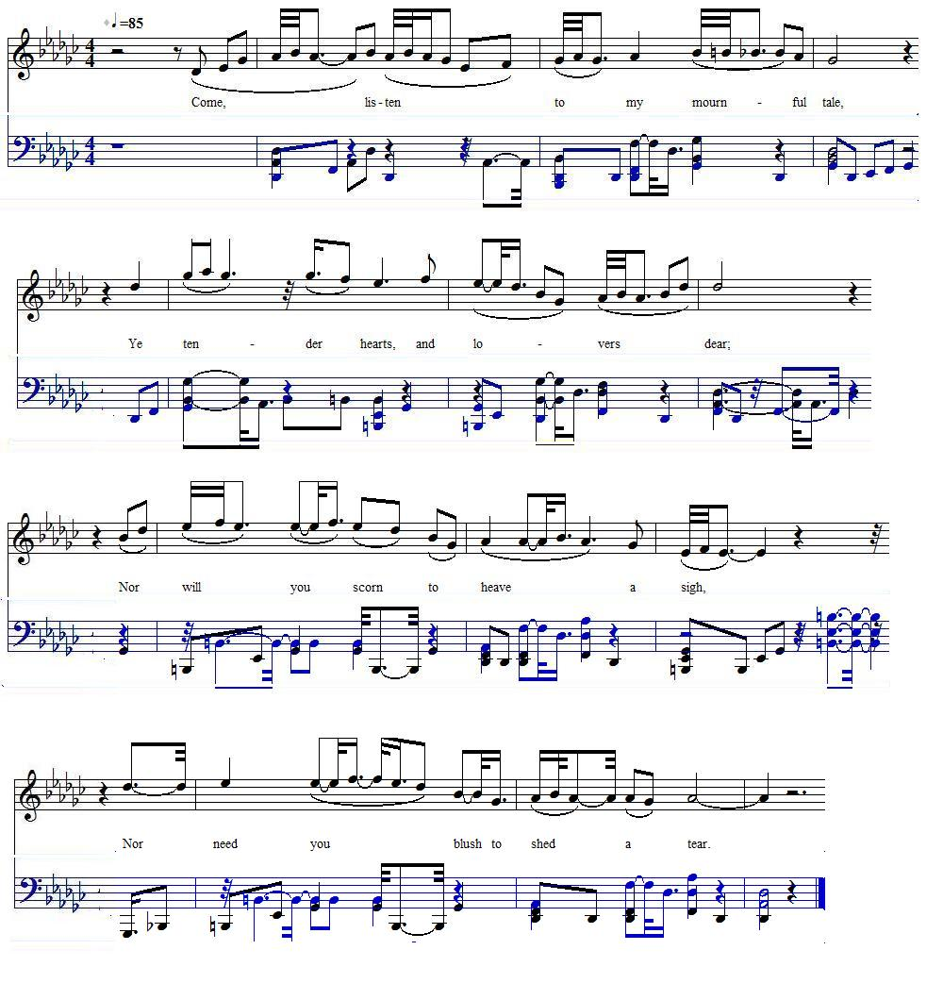

Jemmy Dawson
La ballade de Jemmy Dawson
by William Shenstone
from Robert Malcolm's "Jacobite Minstrelsy", p.328, 1828Tune - Mélodie
No tune known, replaced here by "As I rove out on a May morning"
Sequenced by Christian Souchon
|
To the lyrics:
A rare ballad by a man of letters "Jemmy Dawson" is a ballad on a young officer of Manchester volunteers who was hanged, drawn, and quartered in 1746 on Kennington Common for having served the Pretender. He was engaged to a young lady, who came to the execution, and when it was over fell back dead in her coach. The ballad was written by William Shenstone (1714 - 1763) about the time of his execution in 1746. William Shenstone was an English poet and one of the earliest practitioners of landscape gardening through the development of his estate, "The Leasowes". In "the Valet's Tragedy and other stories", published in 1903, Andrew Lang (1844 -1912), in an essay about "The Queen's Marie", writes: "... Yet there is no other trace known to us of the existence [in Scotland] of the old balladising humour and of the old art in all that period [after 1719]. We have no such ballad [...] about the Old Chevalier, or Lochiel, or Prince Charlie: we have merely Shenstone's 'Jemmy Dawson' and the Glasgow bellman ,[Dugald Graham]'s rhymed 'History of the Rebellion' [of 1745]. In fact, 'Jemmy Dawson' is a fair instantia contradictoria as far as a ballad by a man of letters is to the point ." Jemmy Dawson also appears in a nursery rhyme Brave news is come to town, Brave news is carried; Brave news is come to town, Jemmy Dawson's married. Source: "Nursery rhymes of England", James Orchard Halliwell, p.225, N°440, 1886. Another ballad is said to have been written upon Dawson's fate, and sung about the streets. It is reprinted in the "European Magazine, April, 1801", p. 248, and begins as follows : " Blow ye bleak winds around my head, Sooth my heart corroding care, &c." |
 |
A propos du texte:
Un cas rare de "ballade" écrite par un homme de lettres "Jemmy Dawson" est une ballade sur un jeune officier des Volontaires de Manchester, qui fut condamné à être pendu et éviscéré en 1746 à la prison commune de Kennington pour avoir suivi le Prétendant. Il était fiancé à une jeune fille qui assista à son supplice et qui, lorsque tout fut terminé, tomba morte dans sa voiture. Cette ballade fut composée par William Shenstone (1714 - 1763) à peu près à l'époque de l'exécution en 1746. William Shenstone était un poète anglais et un des premiers jardiniers paysagistes qui se consacra à l'aménagement de sa propriété des "Leasowes". Dans "La tragédie du Valet et autres histoires", publiée en 1903, Andrew Lang (1844 - 1912), au chapître consacré à la ballade "les Maries de la Reine", écrit: "...Pourtant il n'existe pas à notre connaissance d'autre trace de l'existence [en Ecosse] de cet engouement pour cet art ancien qu'est la ballade pour toute la période [qui suit 1719]. Point de ballades [...] dont le sujet serait le Chevalier de Saint-Georges, Lochiel ou Charlie. Rien si ce n'est 'Jemmy Dawson' de Shenstone et l''Histoire rimée de la rébellion' [de 1745] du Crieur de Glasgow , [Dugald Graham]. En réalité, 'Jemmy Dawson' est l'exception qui confirme la règle, car elle est le fait d'un homme de lettres." Jemmy Dawson est aussi le "héros" d'une comptine enfantine. Des nouvelles de bravoure En ville sont colportées, Des nouvelles de bravoure: Jemmy Dawson s'est marié. Source: "Nursery rhymes of England", James Orchard Halliwell, p.225, N°440, 1886. Une autre ballade évoque, dit-on, la fin tragique de Dawson et circula dans les rues. On la trouve imprimée dans l'"European Magazine" d'avril 1801", p. 248. Elle commence ainsi : " Sifflez à mes oreilles, A ma torture portez soin", etc. |

|
Jemmy Dawson
1. Come, listen to my mournful tale, Ye tender hearts, and lovers dear; Nor will you scorn to heave a sigh, Nor need you blush to shed a tear. 2. And thou, dear Kitty, peerless maid, Do thou a pensive ear incline: For thou canst weep at ev'ry woe, And pity ev'ry plaint — but mine. 3. Young Dawson was a gallant boy, A brighter never trode the plain ; And well he lov'd one charming maid, And dearly was he lov'd again. 4. One tender maid, she lov'd him dear, Of gentle blood the damsel came; And faultless was her beauteous form, And spotless was her virgin fame. 5. But curse on party's hateful strife, That led the favoured Youth astray; The day the rebel clans appear'd, O had he never seen that day! 6. Their colours and their sash he wore, And in the fatal dress was found; And now he must that death endure, Which gives the brave their keenest wound. 7. How pale was then his true-love's cheeks, When Jemmy's sentence reach'd her ear! For never yet did Alpine snows, So pale, or yet so chill, appear. 8. With falt'ring voice, she weeping said, " Oh, Dawson ! monarch of my heart, Think not thy death shall end our loves, For thou and I will never part. 9. " Yet might sweet mercy find a place, And bring relief to Jemmy's woes; O, George ! without a prayer for thee, My orisons would never close. 10. " The gracious prince that gave him life, Would crown a never-dying flame; And every tender babe I bore Should learn to lisp the giver's name. 11. " But though he should be dragg'd in scorn To yonder ignominious tree, He shall not want one constant friend To share the cruel fates' decree." 12. O, then her mourning coach was call'd; The sledge mov'd slowly on before; Though borne in a triumphal car, She had not lov'd her fav'rite more. 13. She follow'd him, prepar'd to view The terrible behests of law; And the last scene of Jemmy's woes With calm and steadfast eyes she saw. 14. Distorted was that blooming face Which she had fondly lov'd so long; And stifled was that tuneful breath Which in her praise had sweetly sung. 15. Ah ! severed was that beauteous neck, Round which her arms had fondly clos'd; And mangled was that beauteous breast, On which her love-sick head repos'd. 16. And ravish'd was that constant heart She did to ev'ry heart prefer; For though it could its long forget, 'Twas true and loyal still to her. 17. Amid those unrelenting flames, She bore this constant heart to see; But when 't was moulder'd into dust, " Yet, yet," she cried, " I follow thee. 18. " My death, my death alone can show The pure, the lasting love I bore; Accept, O Heaven ! of woes like ours. And let us, let us weep no more," 19. The dismal scene was o'er, and past, The lover's mournful hearse retir'd; The maid drew back her languid head, And sighing forth his name — expir'd! 20. Though justice ever must prevail, The tear my Kitty sheds is due; For seldom shall she hear a tale, So sad, so tender, yet so true. Source: |
Jemmy Dawson
1. Ecoutez une triste histoire, Cœurs tendres, amoureux épris, Chez tous ceux qui l'ont en mémoire, Larmes et soupirs ont jailli. 2. Et toi, ma douce Catherine, Prête l'oreille, écoute bien: Toi que tous les chagrins chagrinent, Compatis à tous - sauf au mien. 3. Jemmy Dawson, un beau jeune homme, Le plus beau qui fût alentour, Aimait une jeune personne. La belle l'aimait en retour. 4. Elle l'aimait, la tendre fille. Elle était de noble extraction. Avenante autant que gentille. En fait d'honneur, un parangon. 5. Partis et odieuses querelles Ont égaré nos jeunes gens. Quand parurent les clans rebelles. Il les a rejoints sur le champ. 6. Portant leurs couleurs, leur écharpe, On eut tôt fait de le saisir. La mort qu'on lui réserve, un brave Ne peut y penser sans blêmir. 7. Et que dire de son amante Quand de la sentence elle eut vent? La neige qui couvre les pentes Est moins pâle que cette enfant. 8. Elle lui dit, d'une voix blême "Oh, Dawson, élu de mon cœur, La mort n'est rien lorsque l'on aime: Je te suivrai dans ton malheur. 9. "J'obtiendrai sa grâce, j'espère, Pour sauver Jemmy du trépas! Roi Georges, j'ai dans mes prières Toujours une pensée pour toi. 10. "Roi, de grâce, laisse-le vivre, Et les enfants que nous aurons, Avant de lire dans les livres, Apprendront à dire ton nom. 11. "Mais si l'inhumaine torture Devait précéder son trépas, Il peut compter sur ma droiture: Je l'accompagne au Golgotha." 12. La voiture noire. Elle y monte. Et suit le char du condamné. C'eût été un char de triomphe, Elle ne l'eût pas mieux aimé. 13. Elle le suit donc et s'apprête Aux horreurs que la loi prescrit. Calme, sans détourner la tête Elle voit tout ce qu'il subit. 14. Défiguré, le beau visage Qu'elle avait aimé si longtemps. Etouffé, l'harmonieux ramage Qui la louait dans son doux chant. 15. Ah, tranchée, la nuque divine Que ses bras aimaient entourer. Lacérée, la belle poitrine Où sa tête elle aimait poser. 16. Et arraché, ce cœur fidèle, Abominable destinée! Au monarque s'il fut rebelle, Ce cœur l'avait toujours aimée. 17. On le vit dans le feu descendre. Elle l'observa sans broncher. Mais lorsqu'il fut réduit en cendre Elle cria: "Je te suivrai" 18. "Il faut, par ma mort, que je clame Mon pur, mon éternel amour. Ciel! punis les corps, pas les âmes. Nous ne pouvons pleurer toujours. 19. C'est la fin du spectacle atroce. Quand s'éloigne le charreton. Soudain elle dresse le torse, Et meurt en prononçant son nom. 20. Il fallait que justice passe, Et que Cathy verse ces pleurs; Depuis si longtemps je ressasse Ce conte d'amour et d'horreur. (Trad. Christian Souchon (c) 2010) |
|
This ballad is commemorative of the melancholy and peculiarly
hard fate of a youthful victim who was sacrificed to the harsh and
unrelenting policy of the Government, at the period of its triumph
in 1746.
He was the son of a gentleman of Lancashire of the name
of Dawson, and, while pursuing his studies at Cambridge, he heard
the news of the insurrection in Scotland, and the progress of the
insurgents. At that moment he had committed some youthful excesses, which induced him to run away from his College, and either from caprice or enthusiasm, he proceeded to the north and joined the Prince's army, which had just entered England. He was made an officer in Colonel Townley's Manchester regiment, and afterwards surrendered with it at Carlisle. Eighteen of that corps were the first victims selected for trial, and among these was young Dawson.
They were all found guilty, and nine were ordered for immediate
execution, as having been most actively and conspicuously guilty.
Kennington Common was the place appointed for the last scene of
their punishment, and, as the spectacle was to be attended with all
the horrid barbarities inflicted by the British law of Treason, a
vast mob from London and the surrounding country assembled to
witness it. The prisoners beheld the gallows, the block, and the
fire, into which their hearts were to be thrown, without any dismay, and seemed to brave their fate on the scaffold with the same
courage that had prompted them formerly to risque their lives in
the field of battle. They also justified their principles to the last;
for, with the ropes about their necks, they delivered written declarations to the sheriff that they died in a just cause, that they did not repent of what they had done, and that they doubted not but their
deaths would be afterwards avenged. After being suspended for
three minutes from the gallows, their bodies were stripped naked and
cut down, in order to undergo the operation of beheading and embowelllng.
Colonel Townly was the first that was laid upon the block, but the executioner observing the body to retain some signs of life, he struck it violently on the breast, for the humane purpose of rendering it quite insensible to the remaining part of the punishment. This not having the desired effect, he cut the unfortunate gentleman's throat. The shocking ceremony of taking out the heart and throwing the bowels into the fire, was then gone through, after which the head was separated from the body with a cleaver, and both were put into a coffin. The rest of the bodies were thus treated in succession; and on throwing the last heart into the fire, which was that of young Dawson, the executioner cried, " God save King George !" and the spectators responded with a shout. Although the rabble had hooted the unhappy gentlemen on the passage to and from their trials, it was remarked that at the execution their fate excited considerable pity, mingled with admiration of their courage. Two circumstances contributed to increase the public sympathy on this occasion, and caused it to be more generally expressed. The first was, the appearance at the place of execution of a youthful brother of one of the culprits of the name of Deacon, himself a culprit, and under sentence of death for the same crime, but who had been permitted to attend this last scene of his brother's life, in a coach along with a guard. The other was the fact of a young and beautiful female, to whom Mr Dawson had been betrothed, actually attending to witness his execution, as commemorated in the ballad. This singular fact is narrated, as follows, in most of the Journals of that period :— " A young lady, of a good family and handsome fortune, had for some time extremely loved, and been equally beloved by Mr James Dawson, one of those unfortunate gentlemen who suffered at Kennington Common for high treason; and had he been acquitted, or, after condemnation, found the royal mercy, the day of his enlargemeat was to have been that of their marriage. " Not all the persuasions of her kindred, could prevent her from going to the place of execution;— she was determined to see the last of a person so dear to her; and, accordingly, followed the sledges in a hackney-coach, accompanied by a gentleman nearly related to ber and one female friend. — She got near enough to see the fire kindled which was to consume that heart she knew was so much devoted to her, and all the other dreadful preparations for his fate, without being guilty of any of those extravagancies her friends had apprehended. But when all was over, and that she found he was no more, she drew her head back into the coach, and, crying out, "My dear, I follow thee, —I follow thee ; Sweet Jesus, receive both our souls together" , fell on the neck of her companion, and expired in the very moment she was speaking. " That excess of grief, which the force of her resolution had kept smothered within her breast, it is thought, put a stop to the vital motion, and suffocated, at once, all the animal spirits." Robert Malcolm's "Jacobite Minstrelsy", p.328, 1828 |
Cette ballade commémore le destin tragique et particulièrement douloureux d'un jeune homme, sacrifié à la politique de terreur du pouvoir, après son triomphe de 1746.
C'était le fils d'un notable du Lancashire du nom de Dawson, qui alors qu'il était étudiant à Cambridge, eut vent du soulèvement en Ecosse et de ses premiers succès. C'est alors qu'il commit le geste irréfléchi de s'enfuir de son Collège et, par caprice ou par enthousiasme, de monter rejoindre l'armée du Prince, alors qu'elle pénétrait en Angleterre. On le nomma officier dans le régiment de Manchester de Townley, lequel capitula peut après à Carlisle. Dix-huit soldats de cette unité furent les premières victimes à être jugées et, parmi elles, Dawson. Tous furent déclarés coupables et neuf d'entre eux exécutés sur le champ, en raison de leur participation active et publique à la rébellion. La prison de Kennington Common fut le lieu choisi pour leur ultime châtiment, lequel comportait les atrocités barbares prévues par la loi anglaise en cas de haute trahison et infligées sous les yeux des badauds accourus de Londres et des environs. Les prisonniers regardèrent sans sourciller la potence, le billot et le bûcher où l'on allait jeter leurs cœurs. Ils semblaient prêts à affronter l'échafaud avec le même courage qui les avait conduits à risquer leur vie au champ d'honneur. Ils restèrent fidèles jusqu'au bout à leurs convictions: la corde autour du cou, ils remirent au bailli des déclarations écrites proclamant la justesse de leur cause, leur absence de repentir et leur conviction d'être vengés un jour. Après être restés suspendus trois minutes à la potence, leurs corps furent dénudés, détachés et on procéda à leur décapitation et à leur éviscération. Le colonel Townley fut le premier à se pencher sur le billot, mais le bourreau observant des signes de vie dans le corps, il le frappa violemment à la poitrine, un geste d'humanité destiné à l'empêcher de souffrir pendant le reste du supplice. Cela s'avéra sans effet et il dut égorger le malheureux. Suivit l'ignoble cérémonie consistant à arracher le cœur et le jeter au feu avec les entrailles, puis la décapitation à l'aide d'un fendoir. La tête et le corps furent alors placés dans un cercueil. Tous les autres corps subirent l'un après l'autre le même sort. En jetant au feu le dernier corps, le bourreau cria "Vive le roi Georges!" imité en cela par toute la foule. Bien que la populace ait hué les malheureux lorsqu'ils se rendirent et repartirent du tribunal, on remarqua que, lors de l'exécution, leur sort suscita beaucoup d'apitoiement, mêlé d'admiration pour leur courage. Deux circonstances contribuèrent alors à accroître la sympathie du public et l'incitèrent à l'exprimer plus ouvertement. La première fut l'arrivée sur les lieux du supplice d'un jeune frère de l'un des condamnés du nom de Deacon, lui-même condamné à mort pour le même motif, mais qu'on avait autorisé à assister aux derniers instants de son frère, dans une calèche où avait pris place un garde. L'autre était la présence d'une belle jeune fille, la fiancée de M. Dawson, qui assistait à l'exécution, exactement comme il est dit dans la ballade. Ce fait sensationnel est relaté comme suit dans la plupart des journaux de l'époque: "Une jeune femme de bonne famille et d'une grande aisance, était éprise depuis un certain temps, et aimée en retour, de M. James Dawson, l'un des malheureux suppliciés à Kennington Common pour haute trahison. S'il avait été acquitté, ou s'il avait été gracié après sa condamnation, le jour de son élargissement aurait été celui de leur mariage. "Les arguments de sa famille ne parvinrent pas à la dissuader de se rendre au lieu du supplice. Elle avait décidé d'accompagner jusqu'à s mort un être qui lui était si cher et, en conséquence, suivit dans un fiacre les traineaux portant les condamnés, escortée d'un de ses proches parents et d'une amie. - Elle approcha suffisamment pour voir attiser le feu qui consumerait ce cœur qui avait tant battu pour elle, ainsi que tous les autres odieux préparatifs du supplice. Elle ne se rendit pourtant coupable d'aucune des manifestations bruyantes que ses amis redoutaient. Mais, lorsque tout fut terminé, et qu'elle réalisa qu'il n'était plus, elle tourna la tête vers l'intérieur de la voiture et s'écria: " Mon cher, je te suis, je te suis. Seigneur Jésus, réunissez nos âmes!" . Elle mit ses bras autour du cou de son amie et rendit l'esprit en prononçant ces paroles. "Son chagrin excessif, que sa force de caractère lui avait permis de contenir, a conduit, pense-t-on, à une paralysie des fonctions vitales et à l'étouffement de tous ses esprits animaux." Robert Malcolm's "Jacobite Minstrelsy", p.328, 1828 |
|
|
|